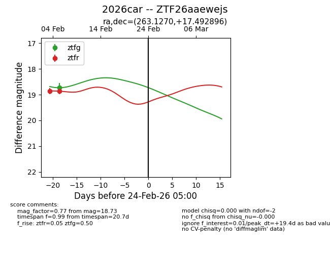
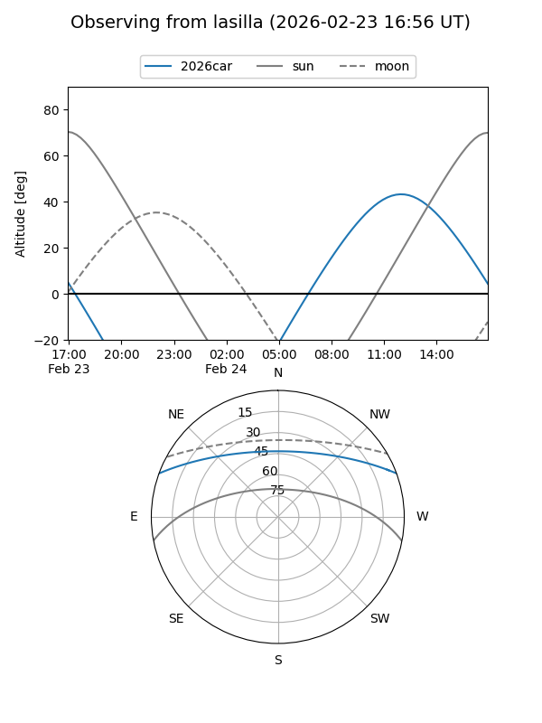
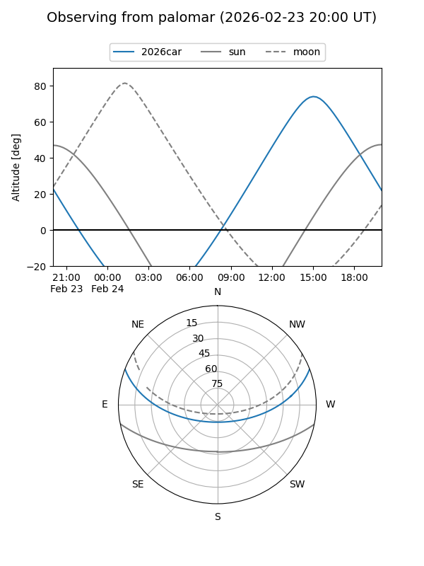

2026car
Target 2026car at 2026-02-24 09:08
Aliases and brokers:
FINK: link
Lasair: link
ALeRCE: link
TNS: link
YSE: link
alt names
ZTF26aaewejs (ztf,fink_ztf)
2026car (tns,yse)
Coordinates:
equatorial (ra, dec) = 263.1270,+17.49290
equatorial (HMS+DMS) = 17:32:30.47,+17:29:34.43
galactic (l, b) = (40.5884,+25.06543)
Flags:
Photometry:
last ztfg=18.73, ztfr=18.87
1 ztfg, 2 ztfr detections
Lightcurve

Visibility


Additional plots